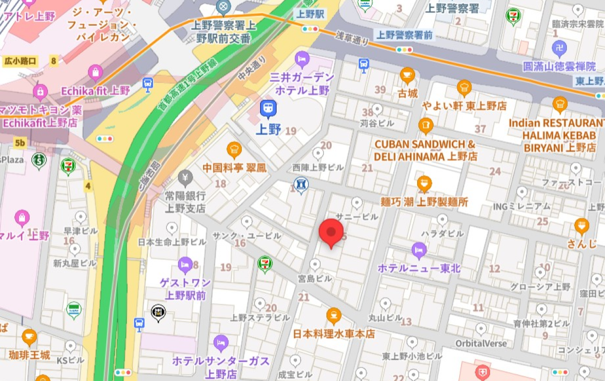

一般内科診療
風邪や発熱、喉の痛み、頭痛、腹痛などの症状を中心に、一般的な体調不良の
診療を行っています。また、原因不明の不調や慢性症状であっても、早期診断
に努めております。
受付時間：午前 9:00〜11:00／午後 12:00〜17:00
休診日：木曜・土曜午後・日曜
※祝祭日も診察を行っておりますが、休診日もございますので、事前にご確認ください
SATO TARO
こんにちは。
佐藤医院の院長、佐藤太郎と申します。当院のホームページをご覧
いただき、ありがとうございます。
佐藤医院では、「地域に根ざした医療」をモットーに、患者様一人
ひとりに寄り添った医療を提供することを目指しております。日常
的な健康管理から生活習慣病の予防、さらには専門的な診療や治療
まで、幅広い内容にわたり、地域の皆様の健康を支える役割を担っ
ていきたいと考えております。
私たちは、患者様が不安を少しでも軽減し、安心して診療を受けて
いただけるよう、わかりやすい説明と丁寧な対応を心掛けておりま
す。また、近隣の医療機関とも連携し、必要に応じて高度医療への
アクセスもサポートいたします。どんな小さな不調でも、どうぞお
気軽にご相談ください。
これからも、患者様の健康を第一に考え、地域の皆様に信頼される
医療機関であり続けられるよう、スタッフ一同努力してまいりま
す。どうぞよろしくお願いいたします。
佐藤医院 院長 佐藤 太郎
風邪や発熱、喉の痛み、頭痛、腹痛などの症状を中心に、一般的な体調不良の
診療を行っています。また、原因不明の不調や慢性症状であっても、早期診断
に努めております。
高血圧症、糖尿病、脂質異常症（高コレステロール血症）、メタボリック
症候群など、生活習慣病の診断と治療を行います。病気の進行を予防し、
健康維持のための生活指導や栄養療法を行います。
胃痛、胃もたれ、胸やけ、便秘、下痢などの消化器系の不調に対応していま
す。必要に応じて胃カメラや超音波検査などを実施し、胃腸の健康をサポート
します。
咳、喘息、胸の痛みなど、呼吸器系の症状について診療を行っています。
季節性の感染やアレルギー性疾患、慢性閉塞性肺疾患（COPD）などにも
対応し、適切な治療と予防をサポートします。
佐藤医院は、地域の皆様の健康を守り、より良い生活をサポートすることを
使命としています。創立以来、私たちは「患者様一人ひとりに寄り添った診
療」を大切にし、地域密着型の医療を提供してまいりました。今後も、皆様
の健康維持と向上のため、より良い医療サービスを提供し続けることをお約
束いたします。
地域の皆様に安心してご来院いただけるよう、スタッフ一同、誠心誠意対応いたします。
それぞれの専門性と温かな心を活かし、皆様の健康を支えるパートナーとしてお力になれ
るよう努めてまいります。

受付時間：午前 9:00〜11:00／午後 12:00〜17:00
休診日：木曜・土曜午後・日曜
※祝祭日も診察を行っておりますが、休診日もございますので、事前にご確認ください
内科
循環器科
呼吸器科
予防医療・健康診断
生活習慣病（高血圧、糖尿病等）の治療・管理
その他、ご不明点があればお電話またはメールでお問い合わせください。